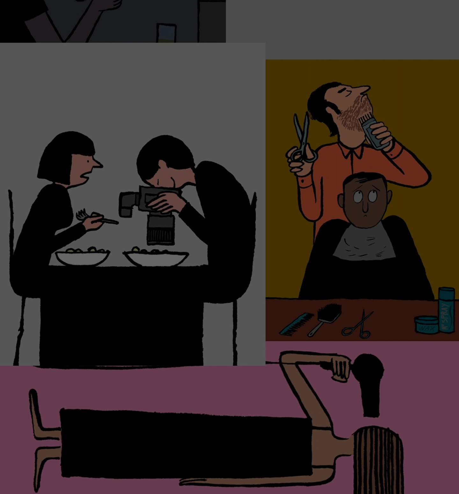

<!DOCTYPE html>
<html lang="en">
<head>
    <meta charset="UTF-8">
    <meta name="viewport" content="width=device-width, initial-scale=1.0">
    <title>Ecovision</title>
    <link rel="stylesheet" href="css/style.css">
    
</head>
    <section class="hero2">
        
        
    </section>
    </body>
    </html>
  

  <!-- Header -->
  <header>
    <div class="logo-container">
        <a href="artisti.html" class="logo-link">
            <div class="freccia1">
                
            </div>
            <div class="logo">visioni illustrate</div>
        </a>
    </div>

    <nav>
        <ul class="nav-links">
            <li><a href="index.html">HOME</a></li>
            <li><a href="artisti.html">ARTISTI</a></li>
            <li><a href="mostra.html">MOSTRA</a></li>
            <li><a href="info.html">INFO</a></li>
        </ul>
        <div class="menu-toggle">&#9776;</div>
    </nav>
</header>

   <!-- Contenuto Principale -->
    <main class="main-wrapper">

        <div class="testo-p"></div>
        <p>
            <span class="evidenziato">JEAN JULLIEN </span>
          </p>
        <p>
            Da dove cominciare con Jean? È l'illustratore francese molto amato, la cui incredibile popolarità deriva dalla sua ossessione di interpretare il mondo che lo circonda.    
        </p>
        <p>
            Dai commenti politici di tutto il mondo agli scarabocchi su finestre, muri, tavoli e oggetti intorno a lui, il lavoro di Jean è immediatamente riconoscibile, inimitabile e possiede una purezza che solo può veramente essere nata dalla vera passione per il suo mestiere.    
        </p>
        <p> 
            Ad accompagnare lo stile disinvolto e divertente di Jean c'è la sua incredibile dedizione. Si destreggia tra innumerevoli commissioni, mostre e mezzi contemporaneamente, guidato da un immutato bisogno di comunicare.
        </p>


       
    </main>

<div class="sfondo"> 

</div>

      
    <!-- Footer -->
      <footer>
        <div class="social-icons">
            <a href="https://www.abacatania.it/" target="_blank">
                
            </a>
        </div>
      
        <div class="footer-links">
            <a href="https://www.privacypolicies.com/live/">Privacy</a> | <a href="https://www.termsfeed.com/contact/">Contatti</a> | <a href="https://www.copyright.gov/">Copyright</a>
        </div>
    </footer>

    <script>
        // Menu mobile toggle
        document.querySelector('.menu-toggle').addEventListener('click', function() {
            document.querySelector('.nav-links').classList.toggle('active');
        });
    </script>

</body>
</html>